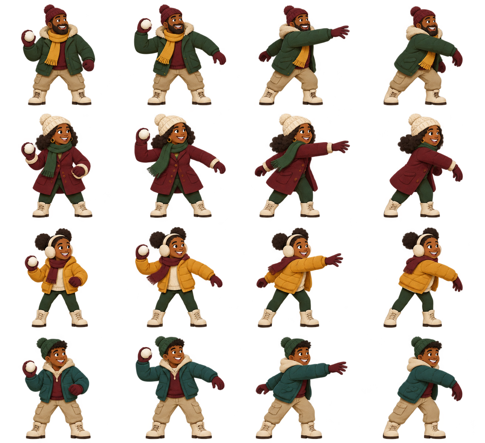
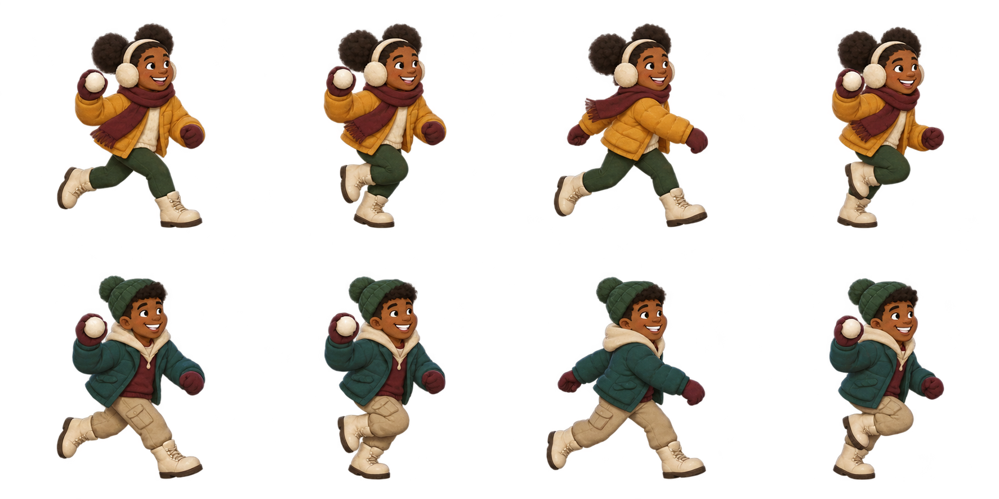
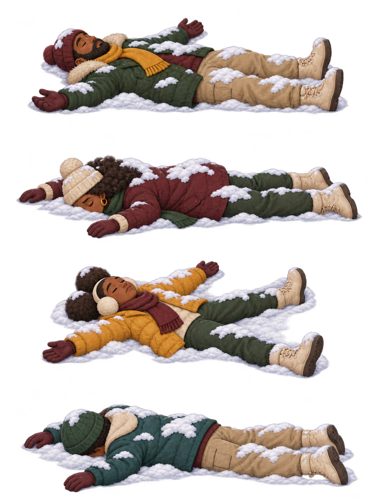

Porch garden gate
Transparent vector for house-side pop-out positions.
Environment artwork and the restored original human characters. Each has its own padded viewBox.
Original SVG source stays sharp at any size; the walkthrough uses uniform perspective scaling.
Adult man, adult woman, teen girl, teen boy. Original right-handed ready, windup, release, and follow-through poses.

Four running frames for each teen. One-hit reactions lead into the flat snow-covered knockout poses.

Transparent vector for house-side pop-out positions.

Four flat, grounded poses with snow coverage. Crouching frames remain in the separate atlas.